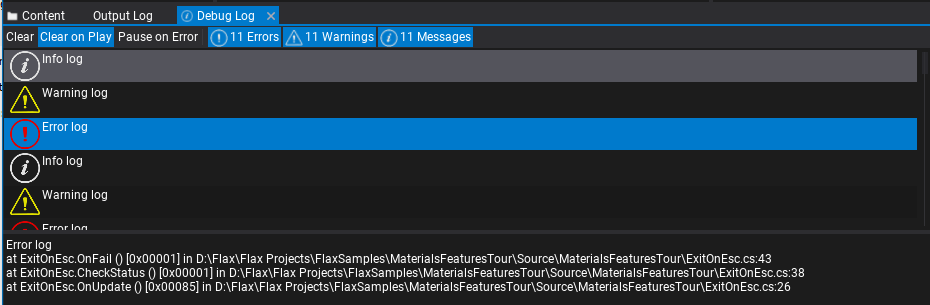
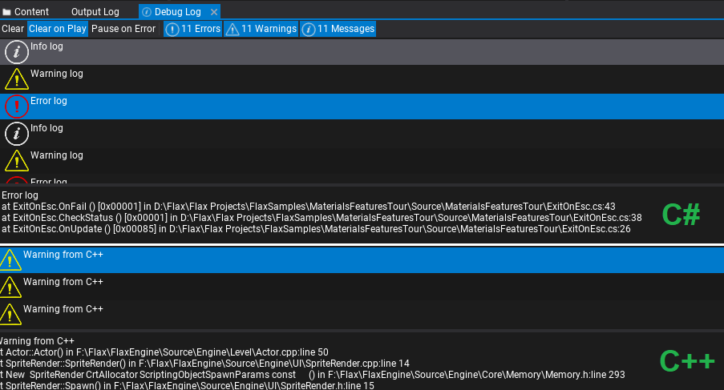

Debug Log

The Debug Log is a utility window that displays the log messages from the game called via Debug.Log, Debug.LogWarning, Debug.LogError or Debug.LogException from C# or via DebugLog interface in C++. Can be used to detect problems with the game or to debug the logic via simple printing. Those logs are also passed into the Output Log and engine log output (console/file).
You can easily select and copy log entries (with Ctrl+C or right-click and use contex menu) or open the code location that called the log function based on the captured stack trace (double-click or right-click and use contex menu).
Debug Log window supports capturing stack trace from C++ and C# scripts.
